大陸漂移學說（1912，章格納）
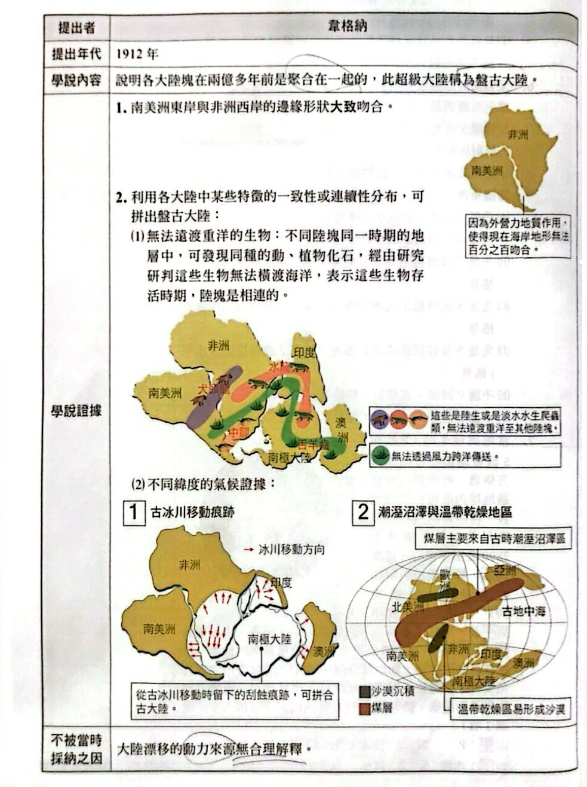
大陸漂移學說：提出者、內容與證據（講義 p.78）
海底擴張學說（1962，海斯）
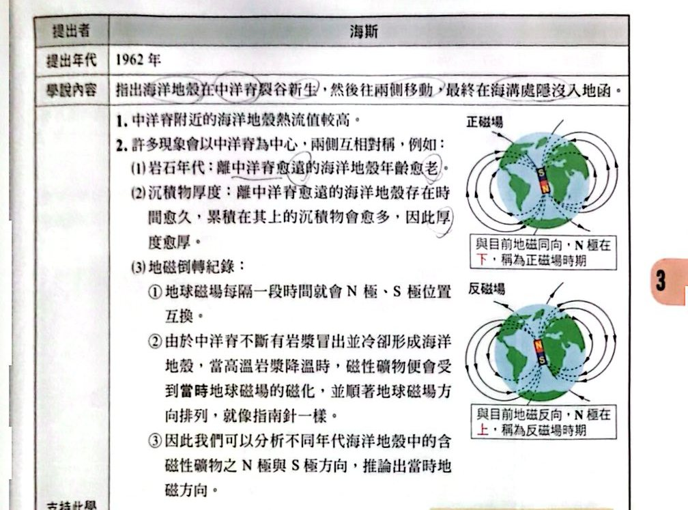
海底擴張學說與地磁（講義 p.79）
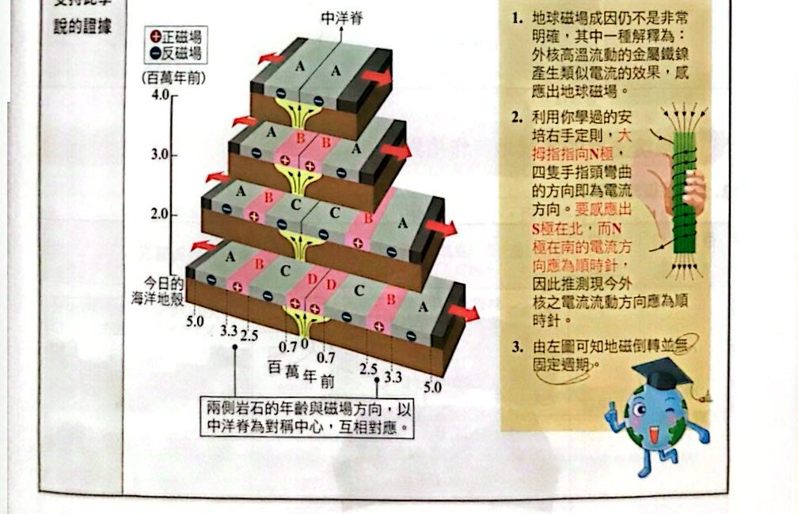
海床磁性條紋以中洋脊為中心對稱（講義 p.79）
板塊構造學說（1967～1968，麥肯齊、摩根）
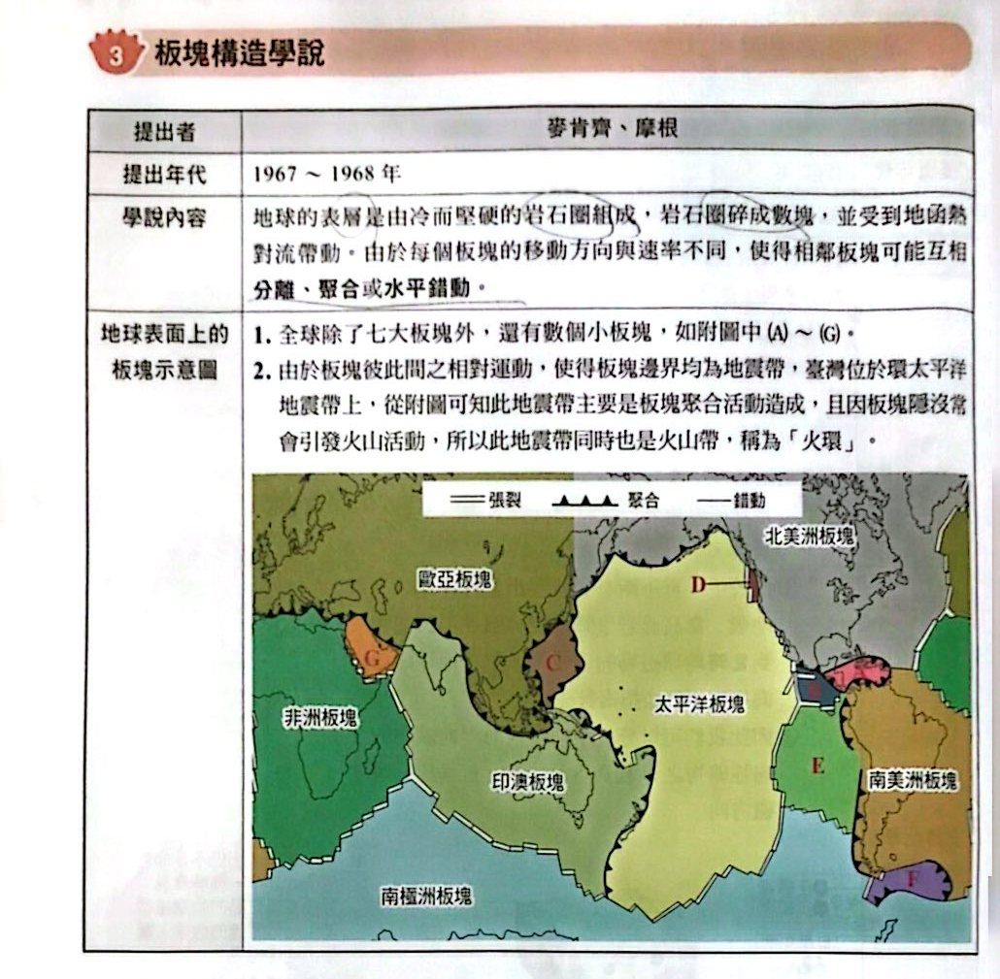
板塊構造學說與全球板塊分布（講義 p.80）
板塊邊界的各種地質作用與構造
1. 張裂型板塊邊界
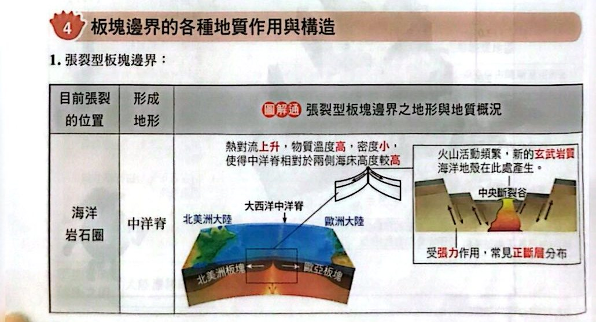
張裂型：海洋岩石圈（中洋脊）（講義 p.80）
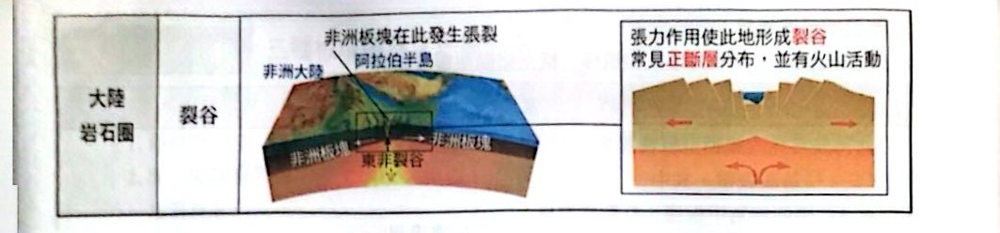
張裂型：大陸岩石圈（裂谷）（講義 p.81）
2. 聚合型板塊邊界
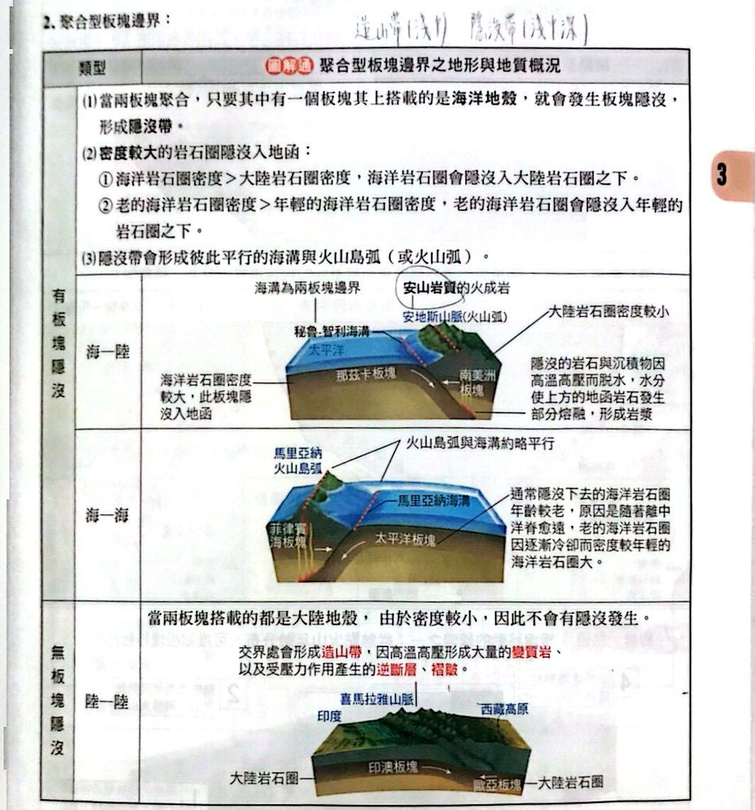
聚合型：海—陸、海—海、陸—陸（講義 p.81）
3. 錯動型板塊邊界
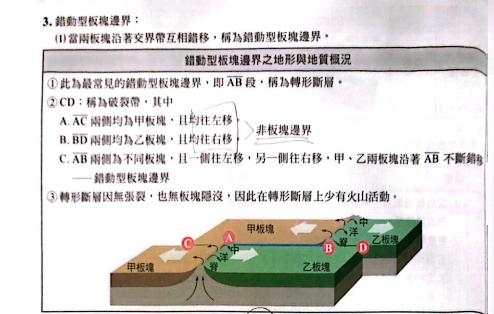
錯動型板塊邊界：轉形斷層與破裂帶（講義 p.82）
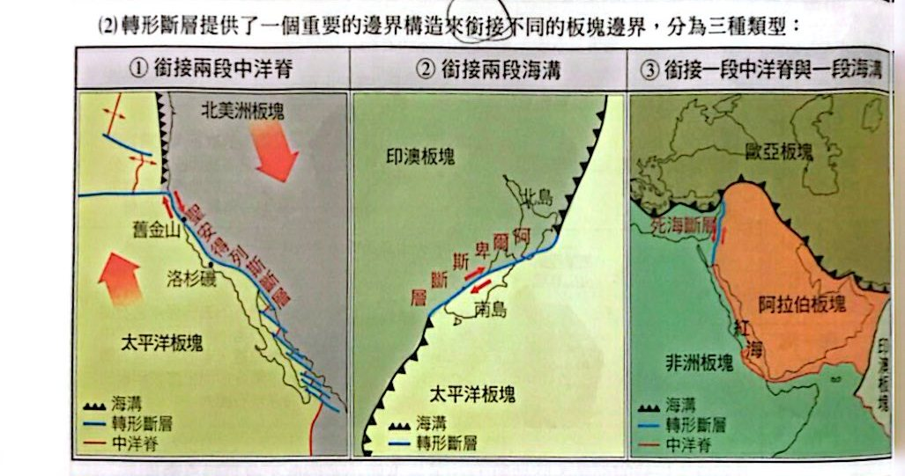
轉形斷層銜接的三種類型（講義 p.82）
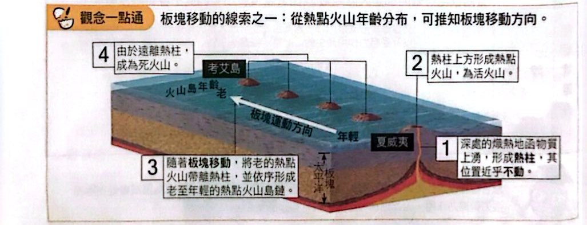
觀念一點通：從熱點火山年齡分布推知板塊移動方向（講義 p.82）
三種板塊邊界的地震與比較
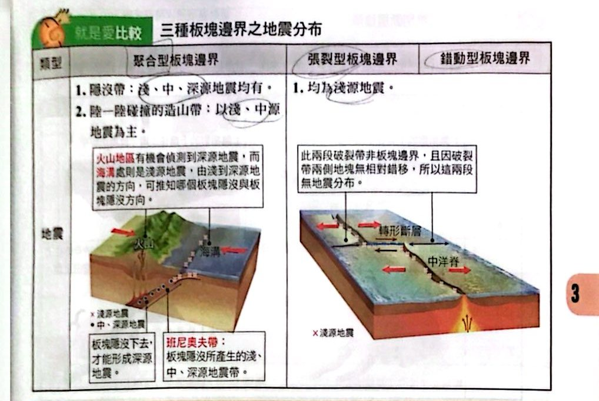
就是愛比較：三種板塊邊界之地震分布（講義 p.83）
如何辨別斷層種類
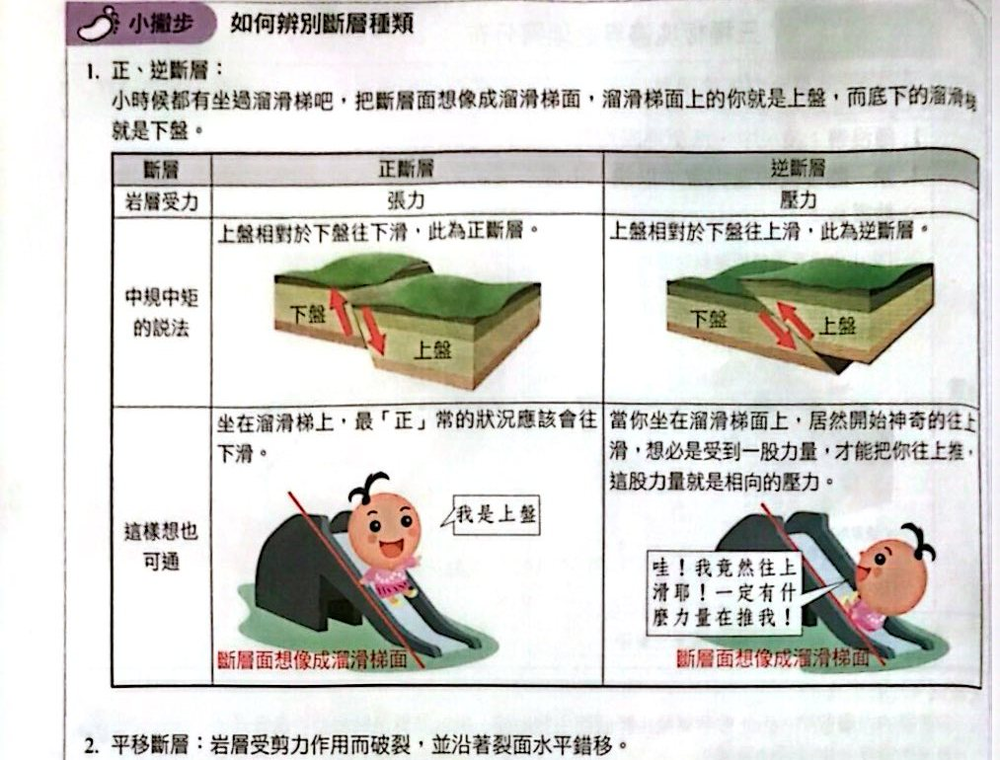
小撇步：正斷層與逆斷層（溜滑梯口訣）（講義 p.84）
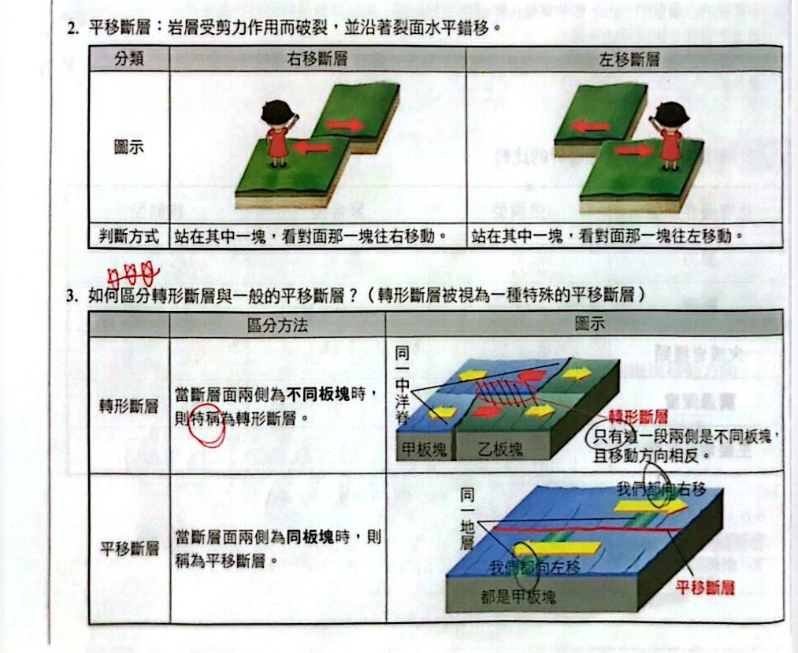
右移／左移斷層、轉形與平移斷層的差別（講義 p.84）
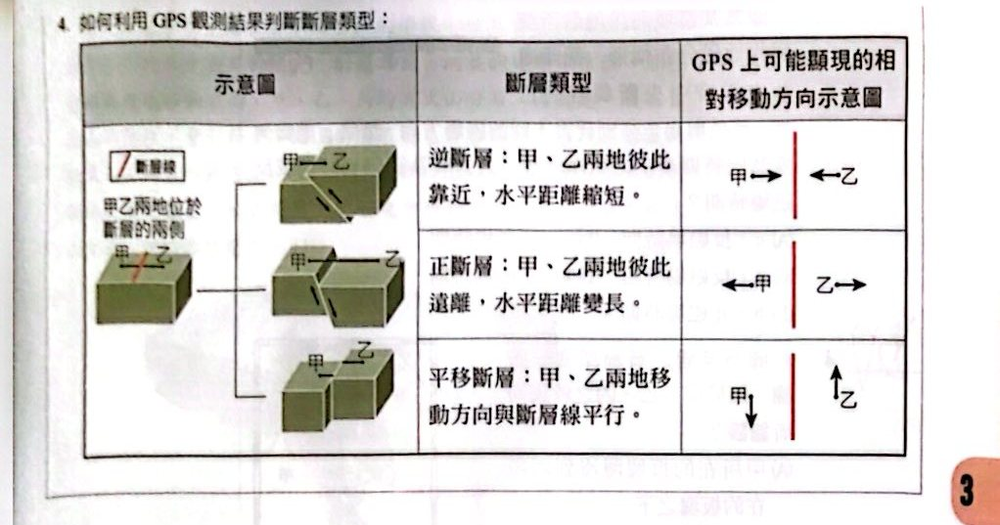
如何利用 GPS 觀測結果判斷斷層類型（講義 p.85）
小試身手
小試 1北半球地震分布圖 （應選 2 項，選錯誤）
看答案與詳解收起
答(A)(E)
解這題在考什麼：看地震分布圖判斷板塊邊界類型：甲＝陸—陸碰撞造山帶（喜馬拉雅）、乙＝西太平洋隱沒帶、丙＝大西洋中洋脊（冰島附近）。
- (A) ✗ 甲地區（歐亞／印度板塊碰撞）是陸—陸碰撞造山帶，不是張裂型裂谷。
- (B) ○ 乙地區有淺、中、深源地震帶 ⇒ 有板塊隱沒。
- (C) ○ 丙地區只有淺源地震 ⇒ 張裂型（中洋脊）或錯動型邊界。
- (D) ○ 甲（造山帶）與乙（隱沒帶）都受壓力，可發現變質岩與褶皺。
- (E) ✗ 乙地區（隱沒帶火山弧）也有火山活動，不是「僅有」丙地區。
看答案與詳解收起
答(B)(D)(E)
解這題在考什麼：三種板塊邊界的特性與海洋地殼的壽命。
- (A) ✗ 海洋地殼在中洋脊生成，但也在海溝隱沒回地函，海洋面積不會一直增大（海洋地殼最老約 1.8 億年，不超過兩億年）。
- (B) ○ 最高的山脈（喜馬拉雅）在聚合型板塊邊界（陸—陸碰撞）。
- (C) ✗ 全世界最深的地形是海溝，屬於聚合型（海洋板塊隱沒），不是張裂型。
- (D) ○ 錯動型邊界：沒有新地殼生成，也沒有舊地殼消失。
- (E) ○ 大陸地殼不會隱沒，所以最老的大陸地殼年齡 ＞ 最老的海洋地殼年齡。
看答案與詳解收起
答(C) a，反磁場時期
解這題在考什麼：海底擴張的對稱性與地磁倒轉紀錄。
- 中洋脊中央斷裂谷（箭頭 d）是最新生成的海洋地殼，磁場方向與現在相同＝正磁場；d 是藍色，所以藍色＝正磁場、褐色＝反磁場。
- 以 d 為對稱中心：左側 c、b、a 對應右側 e、f、g（c↔e、b↔f、a↔g）。
- g 的對稱位置是 a；g 是褐色 ⇒ 反磁場時期。
- 所以與 g 同時期產生的是 a，當時為反磁場。
看答案與詳解收起
答(D)
解這題在考什麼：震源深度由淺到深的方向＝板塊隱沒的方向。
- 圖中震源愈往左（西）愈深（紫色＝400～750 km 深源），表示板塊從右（東）往左（西）隱沒；甲在右、丙在左 ⇒ 甲所在的板塊隱沒到丙之下。
- (A) ○ 甲隱沒到丙之下。
- (B) ○ 乙靠近板塊邊界（淺源地震處）＝海溝。
- (C) ○ 丙是上覆板塊，隱沒的岩石釋放水分使地函熔融，所以有可能有火山活動。
- (D) ✗ 甲所在的板塊會隱沒，必須帶有海洋地殼（大陸地殼密度小、不會隱沒），不可能「全部搭載大陸地殼」。
- (E) ○ 丙板塊可能是海洋板塊（例：海—海隱沒）。
看答案與詳解收起
答(D) 甲乙丁
解這題在考什麼：火山多在隱沒帶、中洋脊、熱點。
- 甲（日本附近）：西太平洋隱沒帶 ⇒ 有火山。
- 乙（南美洲西岸）：安地斯火山弧 ⇒ 有火山。
- 丁（大西洋北部，冰島）：中洋脊＋熱點 ⇒ 有火山。
- 丙（澳洲）、戊（北美洲內陸）：位於板塊內部，沒有現今火山。
- 所以是甲乙丁 ⇒ (D)。
看答案與詳解收起
答(B) 逆斷層
解這題在考什麼：用 GPS 箭頭判斷斷層類型。
- 斷層（紅線）西側的測站箭頭長，且朝東南（朝向斷層）移動；東側箭頭短。
- 兩側測站互相靠近、水平距離縮短 ⇒ 逆斷層（受壓力作用）。
- 不是正斷層（距離變長）；也不是左／右移（兩側沿斷層線平行移動）；轉形斷層必須是板塊邊界，此處是板塊內部的斷層。
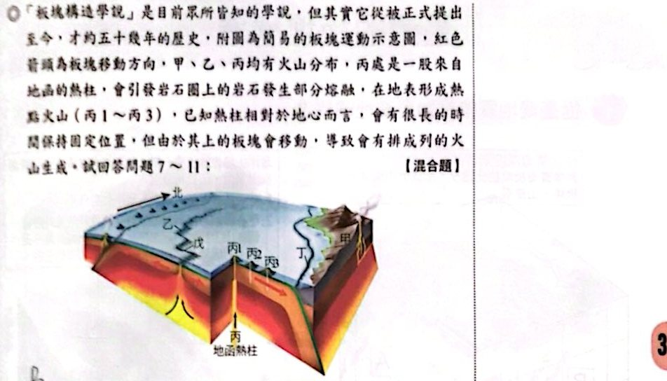
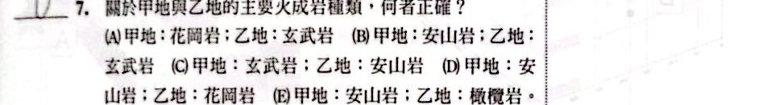
看答案與詳解收起
答(B)
解這題在考什麼：聚合型海—陸隱沒帶的火成岩＝安山岩；中洋脊（張裂）的火成岩＝玄武岩。
- 甲：大陸邊緣的火山弧（海洋板塊隱沒到大陸板塊之下）⇒ 安山岩質。
- 乙：位於中洋脊（張裂型）⇒ 玄武岩質。
- 所以甲：安山岩；乙：玄武岩 ⇒ (B)。（花岡岩是深成火成岩，不是火山岩；橄欖岩是地函的岩石。）
看答案與詳解收起
答丙 1；判斷依據：地函熱柱位於其下
解這題在考什麼：熱點火山＝熱柱上方才是活火山。
- 熱柱相對於地心位置固定，位在丙 1 正下方 ⇒ 丙 1 是活火山。
- 丙 2、丙 3 已被板塊帶離熱柱，無岩漿供應 ⇒ 死火山（越遠越老）。
看答案與詳解收起
答(B)
解這題在考什麼：離熱點愈遠，火山愈老。
- 丙 1 在熱柱上 ⇒ 最年輕；丙 2 較老；丙 3 最老。
- 圖中縱軸往上＝較老、往下＝年輕；橫軸 丙₁→丙₂→丙₃：點由低（年輕）→高（老）逐漸上升 ⇒ (B)。
看答案與詳解收起
答(B)(E)
解這題在考什麼：看圖判斷邊界類型、地震深度、斷層種類。
- (A) ✗ 丙地的熱點火山（丙 2、丙 3）不在板塊邊界，並非「均」位於邊界。
- (B) ○ 圖中有張裂型（中洋脊）、聚合型（海溝隱沒帶）、錯動型（轉形斷層）三種邊界。
- (C) ✗ 聚合型邊界（隱沒帶）還有中、深源地震。
- (D) ✗ 還有轉形斷層（平移）。
- (E) ○ 板塊＝岩石圈，底部都位於地函（軟流圈上方）。
看答案與詳解收起
答(A)
解這題在考什麼：離中洋脊愈遠 ⇒ 海洋地殼愈老、沉積物愈厚。
- 乙在中洋脊（地殼最新、沉積物最薄）；丁在大陸邊緣（遠離中洋脊）。
- 從乙到丁：海洋地殼年齡愈來愈老、沉積物愈來愈厚 ⇒ (A)。